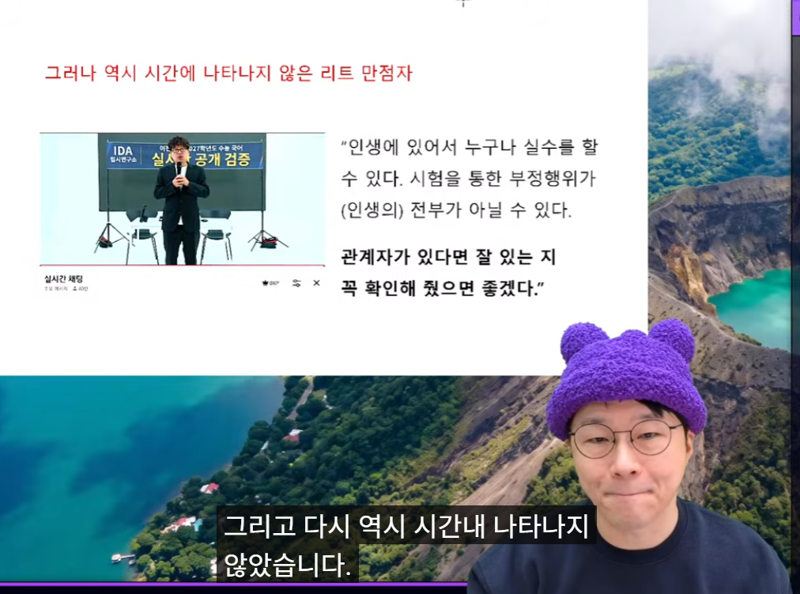
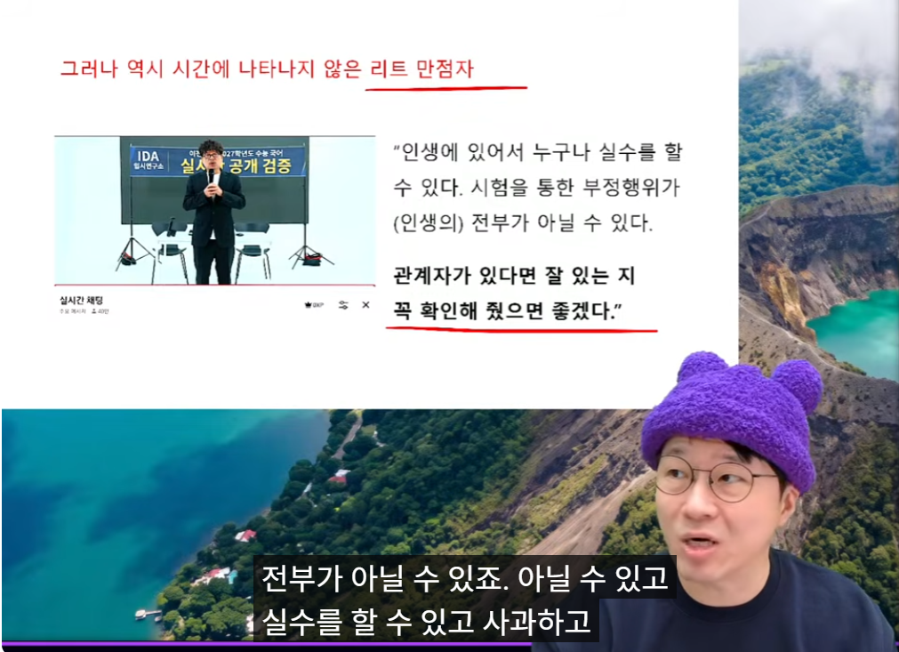

*발언 그대로 옮긴거임
(날조 없음)
수능 당일날 리트 만점자의
수능 국어 공개 검증이 예정돼 있었다
실시간 공개 검증한다고 했다
나도 실시간으로 보고 있었고
8시 10분 되니까 10만명으로 시작해서
나중에 40만명까지 보더라
실제로 오냐 안 오냐 이걸 보려고
무려 40만명이 보고 있었다

당사자는 시간이 되어서 나타나지 않았고
담당 선생님이 인생에 있어서~
라고 발언을 했는데 리트만점자에게 한 얘기다
관계자가 있다면 꼭 확인해줬으면 좋겠다고 했다
결국 나타나지 않았고

시험을 통한 부정행위가 인생의 전부가 아닐 수는 있다
아닐 수 있고 실수를 할 수 있고
사과하고 반성하고 그런 모습을
보였으면 됐는데

심정지 상태라는 말은 사망한 채로
발견 됐는데의사 선생님의 뭐가 없던
그런 것 같다

개인적으로 보면서
좀 기분이 먹먹했다
그냥 사과하고 물론 잘못헀지만
잘못하고 이런저런 안 좋은 모습 많이 보였지만
모르겠다 내가 유약한 사람이라서 그런지
그냥 사과하고 회개하고 살았어야 된다
미안하고 잘못헀다고 하고 굳이 그래야 됐나?

자수한 친구도 있는데
그걸 뭘 또 굳이 공개검증 하겠다고
뭐 그렇게 하고 마지막까지 스스로를
몰아붙여서 굳이 그랬어야 됐나?
개인적으로는 마음이 좀 그랬다

다들 그렇게 생각할거라고 생각한다
라이브 검증했던 채널에서도 고인의 명복을
빌겠다는 제목을 올렸다
판정단을 맡아서 내가 한 모든 일이
조롱 받는 것 같다라며
눈물을 흘리신 강사님이 계셨는데
그 강사님도 명복을 비는 게시글을 작성했다
굳이 그랬어야 됐나?
굳이 스스로를 그렇게까지 밀어붙였어야 된다
많은 사람들한테 이런 생각을 많이 했고
어제자 슈카월드 방송의 일부
세무냥이처럼 그냥 혼자 속인게 아니라
남에게 직접적으로 해를 끼친 전과가 너무 많아